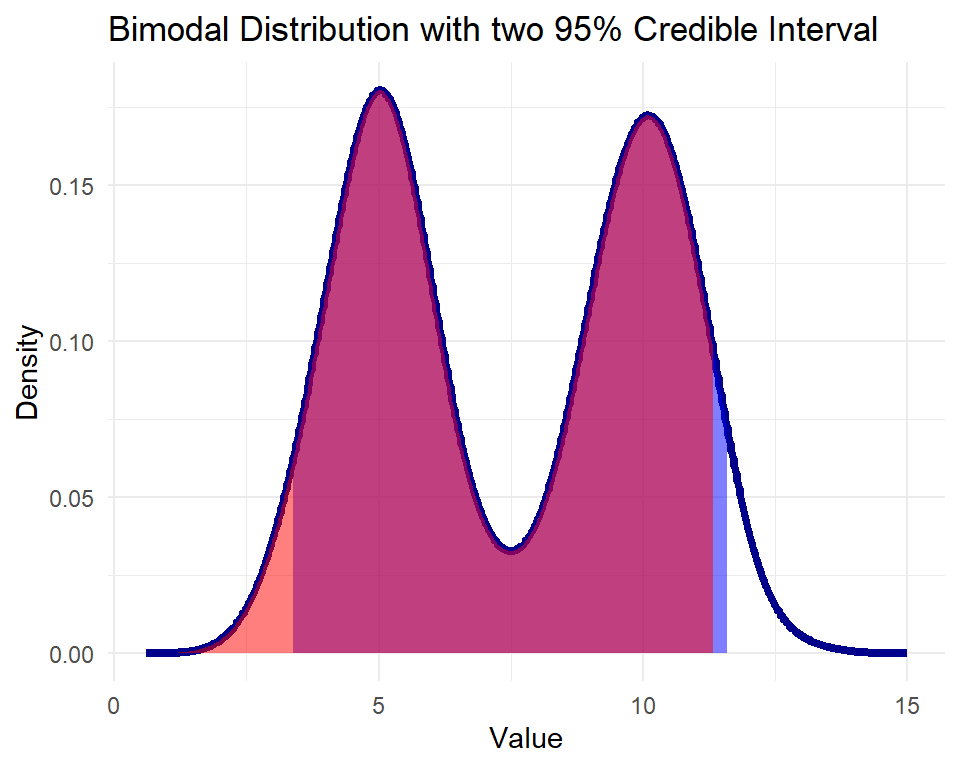
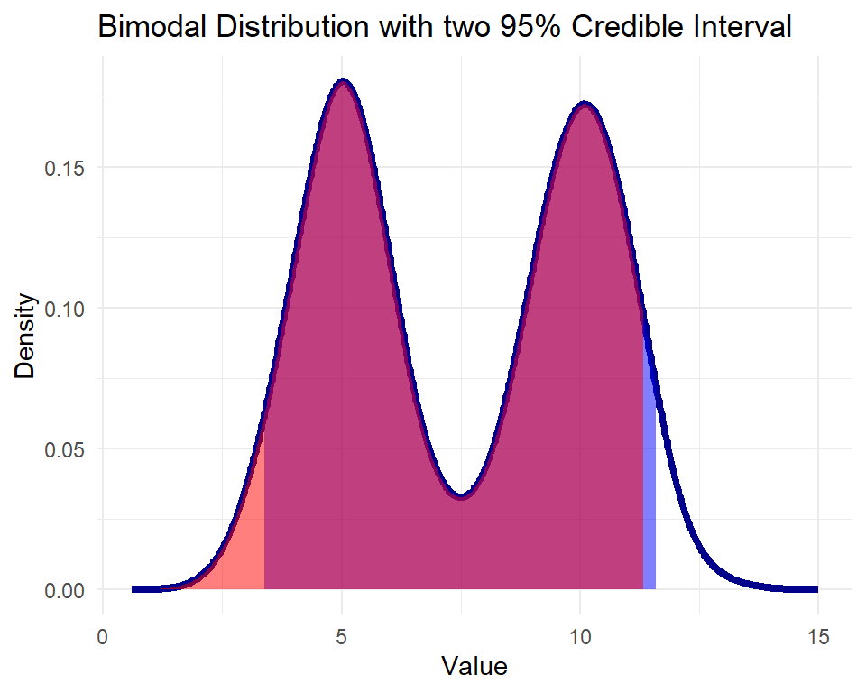
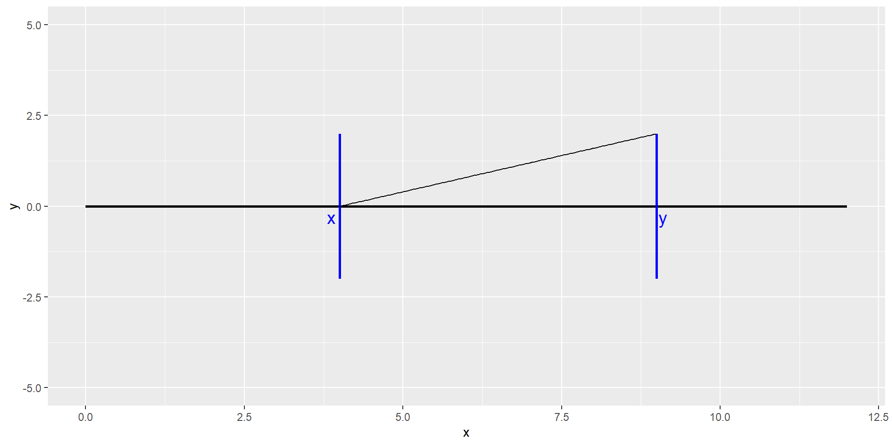
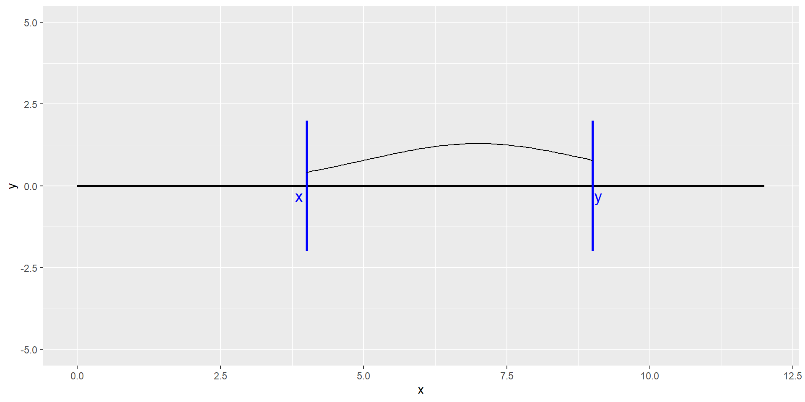

\(Y \in \mathbf{Y}\) be a sample from the space of all samples, \(\theta \in \Theta\) be a parameter from all possible parameter values \[ P(\theta | Y) =\frac{P(Y | \theta) P(\theta)}{P(Y)} \] - Prior: Belief about parameters before seeing the data, set by the researcher.
Likelihood: The probability of observing the data given the parameters, the endpoint of frequentism.
Posterior: Belief about parameters given the data, the point of Bayesian statistics.
Evidence: (Usually unobserved) normalising constant.
Given we chose the model \[ y = \theta_{0} + \theta_{1}x + \epsilon\quad y,x,\theta_{0},\theta_{1} \in \mathbb{R}\\ \epsilon \sim \mathcal{N}(0,\sigma^{2}) \] We set relatively uninformative priors \[ \theta = \begin{pmatrix}\theta_{0}\\ \theta_{1}\end{pmatrix} \sim \mathcal{N}\left(\begin{pmatrix}0\\0\end{pmatrix},\begin{pmatrix}\sigma_{0}^{2} & 0\\ 0 & \sigma_{1}^{2}\end{pmatrix}\right) = \mathcal{N}(\mu_{prior}, \Sigma_{prior}),\quad \sigma^{2}\sim \text{Inv-Gamma}(\alpha, \beta)\] The likelihood defined by the model given that we have \(k\) samples follows the distribution \[ y|\beta_{0},\beta_{1} \sim \mathcal{N}_{k}(X\beta, diag(\sigma^{2})), \quad X = \begin{pmatrix}1 & x_{1}\\ ... &...\\ 1 & x_{k}\end{pmatrix}\] Therefore the posterior is \[ P((\theta_{0}, \theta_{1})^{T} | y) \propto \mathcal{N}\left(\Sigma_{posterior}\frac{1}{\sigma^{2}}X^{T}y, (\Sigma_{prior}^{-1} + \frac{1}{\sigma^{2}}X^{T}X)^{-1} \right)\] !!!! Note the above is false, do not bother with the full distribution
Say, given \(Y^{n} = (y_{1},...,y_{n})\) the posterior $ P(| Y^{n}) $ looks approximately like

Non unique 95% credible interval
Usual workaround of minimising width of interval
A parameter set \(\Theta\) is said to be (point) identified if \(\Theta = \{\theta\}\)
In a Bayesian setting parameters are set identified if \(\exists \theta_{0}, \theta_{1} \in \Theta ~ s.t. \theta_{0} \neq \theta_{1},\quad p(y | \theta_{0}) = p(y | \theta_{1}) ~ \forall y \in Y\)
I.e. for any draw of the data the priors must be equal, but not necessarily the posteriors.
Indeed the problem is that the posteriors can be different depending on the draw, even though the priors are the same
Let \(\mathbf{Y} \subseteq\mathbb{R}^{d}\) be the set of samples \(Y\) and \(\Theta\subseteq\mathbb{R}^{d}\) be the set of possible parameter values \(\theta\).
Suppose we only observe a reduced form parameter \(\phi = g(\theta)\), where \(g: \Theta \to \Phi,\quad g(\theta) = g(\theta^{'}) \text{ iff }p(Y|\theta) = p(Y|\theta^{'}) \forall Y\in \mathbf{Y}\). Note in set identification \(g\) is not injective.
Define the identified set \(IS_{\theta}(\phi) = \{\theta \in \Theta | g(\theta) = \phi\}\)
In set identified structural models the prior \(\pi_{\theta|Y}\) can be decomposed as \(\pi_{\theta|Y}(\cdot) = \int_{\Phi}\pi_{\theta |\phi}(\cdot)d\pi_{\phi|Y}\).
\(\pi_{\phi |Y}\) is updated as data comes in, \(\pi_{\theta | \phi}\) is not.
We could also choose a \(\pi_{\theta |\phi}\), but a good one is often not available. Bypassing this problem is the main contribution of this paper
Any valid conditional prior must satisfy \(\pi_{\theta |\phi}(IS_{\theta}(\phi)) = 1, \pi_{\phi}\text{-a.s.}\)


To prove all the results in the paper they use random set theory, where instead of having a single outcome, you have a set of outcomes of your random variable.
Definition: For a random correspondence \(\mathcal{X}\), \(E^{A}[\mathcal{X}] = \{E(f) | f \text{ is a measurable selection of }F\}\)
Consider \(\mathcal{X} : \{1,2\} \to \mathcal{P}(\{1,2,3\}), 1 \mapsto \{1,2\}, 2 \mapsto \{2,3\}\) \[ \begin{cases} f_{1}(1) = 1, f_{1}(2) = 2\\ f_{2}(1) = 1, f_{2}(2) = 3\\ f_{3}(1) = 2, f_{3}(2) = 2\\ f_{4}(1) = 2, f_{4}(2) = 3 \end{cases} \Rightarrow E[\mathcal{X}] = \{E(f_{1}), E(f_{2}), E(f_{3}), E(f_{4})\} \stackrel{\mathbb{P} = U\{1,2\}}{=} \{1.5, 2, 2.5\} \]
Left: \(\sigma_{A}(p) = ||p|| h\), Right: \(\sigma_{A}(p) = -||p|| h\)
Li, S., Ogura, Y., Kreinovich, V. (2002). The Aumann Integral and the Conditional Expectation of a Set-Valued Random Variable. In: Limit Theorems and Applications of Set-Valued and Fuzzy Set-Valued Random Variables. Theory and Decision Library, vol 43. Springer, Dordrecht. https://doi.org/10.1007/978-94-015-9932-0_2 # Graveyard
MAA 307: Convex optimization and optimal control. Samuel Amstutz. CMAP and Department of Applied Mathematics. Ecole polytechnique
Moon, Hyungsik Roger, and Frank Schorfheide. “Bayesian and frequentist inference in partially identified models.” Econometrica 80.2 (2012): 755-782.